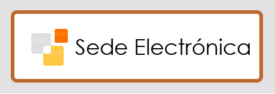

Certificado Digital
Obtenga o renueve su certificado digital.
Acceder
Acceso seguro a trámites y servicios públicos
Acceda a los principales servicios de la Administración Pública mediante certificado digital, DNI electrónico o sistema Cl@ve.
Obtenga o renueve su certificado digital.
AccederIdentificación electrónica para ciudadanos.
AccederConsulte sus expedientes y notificaciones.
AccederGestiones fiscales y presentación de declaraciones.
AccederAcceso a informes y trámites laborales.
AccederSolicite cita para realizar trámites presenciales.
AccederEste portal facilita el acceso a diferentes servicios electrónicos ofrecidos por la Administración Pública. Todos los trámites se realizan mediante conexiones seguras y organismos oficiales.